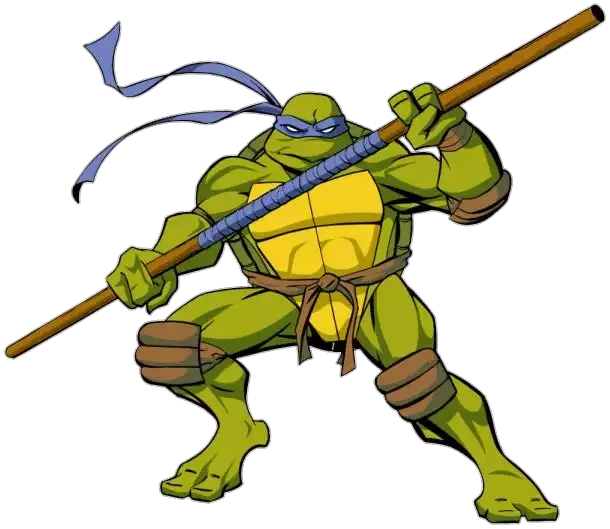

Donatello
In the comics, Donatello is depicted as the calmest turtle. While the comics' portrayal of the team has no official command structure, in the early stories he is depicted as the next in command, and the closest brother to Leonardo. In the first issue, he is the one that killed the Shredder by knocking him and his grenade off the roof. The second issue elaborated more on each turtles' personalities and opened with Donatello soldering a circuit. Later in the issue, Donatello states that he is "familiar with some computer systems" and helps April O'Neil deactivate the Mousers. During the turtles' exile to Northampton, Donatello becomes obsessed with fixing up and repairing the many broken things within the farmhouse they were living in. Most notably he spent days and nights fixing the boiler to give his family hot running water and builds a windmill and a water wheel to provide electricity. He also finds an old typewriter and writes his own personal credo. In the Donatello one-shot, Donatello encounters an artist called Kirby (an homage to the comic artist Jack Kirby) whose mysterious crystal brings his drawings to life before disappearing. The two newfound friends journey to a dimension inhabited by Kirby's creations and help the heroes defeat the invading monsters.
History
Donatello's appearance in the Archie publications were largely based on the 1987 Fred Wolf incarnation, but with Mirage writers on board at Teenage Mutant Ninja Turtles Adventures such as Steve Murphy and Ryan Brown, a lot of references to his Mirage counterpart were made. Donatello was showcased to be pure of heart and soul, being able to pass through the Netherworld unscathed. He was also chosen of the Turtles by a group of Aliens known as the Sons of Silence to share their wisdom. He was one of the few who could telepathically communicate with them. Donatello was almost a pacifist, detesting every time he used violence.